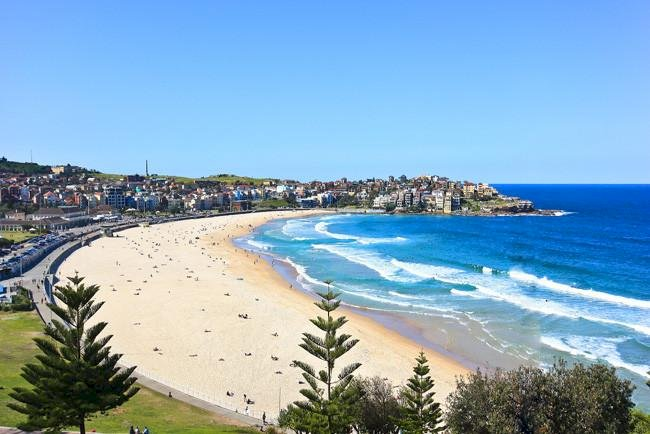

Akdeniz, Anglosakson, Asya ve Okyanusya kültürlerinin eşsiz bir sentezini içinde barındıran Sidney; Avustralya'nın en büyük, en kalabalık ve en çok turist çeken şehridir. Sidney 12,367.7 km2'lik bir alana yayılan 4.810.000 civarı nüfusuyla günümüzün en önemli şehirlerinden biri konumundadır. Aynı zamanda adanın en eski yerleşim birimlerinden biri olan şehir, 1700'lü yıllara kadar Aborjinlerin yaşama alanı iken 1770 yılında James Cook'un keşfi ve 1788 yılında ilk İngiliz kolonisinin yerleşmesi sonucunda modern gelişmeye ve modernleşmeye başlamıştır. Son İngiliz kolonisinin yerleşmesinden sonra, 1851 yılında şehrin yakınlarında altın bulunması, "altına hücum"u başlatarak şehir popülasyonunda patlamaya sebep olmuş, bu artışı desteklemek için yapılan yatırımlar ise Sidney'in bugünkü gelişmişlik seviyesinin temeli olarak kabul edilmiştir.
Arthur Philip'in "İstisnası olmaksızın, dünyanın en iyi limanı" dediği Sidney; Avustralya'nın New South Wales eyaletinin başkentidir. Şehir dünyanın en büyük doğal limanı olan Port Jackson (Jackson Limanı)'ın çevresinden, batıdaki Blue Mountains (Mavi Dağlar)'a doğru uzanır. Sidney Harbour, Middle Harbour, North Harbour ve Paramatta Nehri'ni içeren liman, şehre dünyanın en önemli sahil yerleşkelerinden biri olma özelliğini kazandırmıştır.
Kolonizasyon döneminden itibaren hızlı bir gelişme geçiren Sidney 2000 yılında düzenlenen Yaz Olimpiyatları sayesinde dünyadaki ünü daha da artmıştır. Şehrin iklimi yılın her sezonunda ziyaret etmeye uygundur. Yılda ortalama 300 günü güneşli geçer ve kış ayları da soğuk olarak görülmez. Aynı zamanda zengin su altı yaşamı ve diğer pek çok doğal güzelliğiyle zengin bir doğaya da sahiptir. Bu güzel iklimi, çeşitli iş olanakları ve yüksek gelişmişlik seviyesi sayesinde göçmenler için popüler bir nokta haline gelmiştir. Öyle ki, tahminlere göre Sidney nüfusunun %40'ı Avustralya doğumlu değildir. Bu göçler nedeniyle çokkültürlü bir yapısı vardır ve farklı kültürler şehirde uyum içerisinde yaşamaktadır. Bu durum dünyanın en yaşanılabilir şehirlerinden birisi olmasını sağlamıştır ve bu çokkültürlü yapının etkileri minıaridennıutfaga şehrin pek çok özelliğinde görülmektedir. Şaşalı gece hayatı, metropol yaşam tarzı, huzurlu, sakin durakları, modern mimarisi, doğal güzellikleri ve tarihi mekanları ile çeşidi ve çeşnisi bol bir şehir olan Sidney'in çekiciliğinin en büyük nedeni ziyaret eden kişilerin her türlü beklentilerini karşılayabilmesinden kaynaklanır.